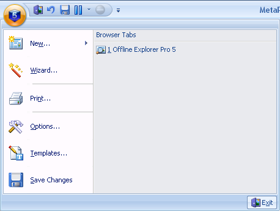

El objetivo de las Plantillas es simplificar la creación de Proyectos. Usted puede crear cuantas plantillas desee con propiedades personalizadas y elegirlas al crear un nuevo Proyecto usando el botón Nuevo... (Cinta de Opciones - Pestaña Inicio).
El nuevo Proyecto acepta la configuración de la Plantilla seleccionada, la que puede ser modificada en cualquier momento usando el cuadro de diãlogo Propiedades de Proyecto.
Una de las Plantillas se llama Plantilla por defecto. Se usarã cuando un nuevo Proyecto se crea con la ayuda de Arrastra y Colocar, operación Pegar, Barra de Direcciones, etc.
Para editar la lista de Plantillas y otra configuración, haga clic en el botón Aplicación y seleccione Plantillas en el menú.
